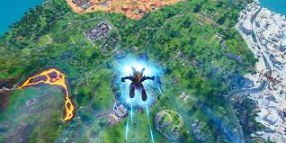
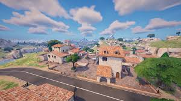
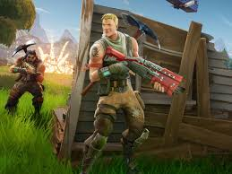
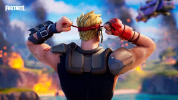
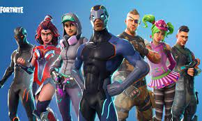

Fortnite to dynamiczna gra, w której uczestnicy wchodzą do rozległego świata, aby walczyć o przetrwanie jako ostatni gracz lub zespół. Gra oferuje unikalne połączenie budowania i strzelania, co sprawia, że jest inna niż tradycyjne gry typu battle royale. Rozgrywka skupia się na walce w czasie rzeczywistym, a gracze lądują na mapie, zbierając broń, materiały budowlane i inne zasoby. Jednym z charakterystycznych elementów Fortnite jest możliwość budowania struktur z różnych materiałów, takich jak drewno, metal czy kamień. Budowanie stanowi istotny element taktyki, umożliwiając graczom ochronę przed atakami przeciwników lub szybkie pokonanie trudnych przeszkód. Gra podzielona jest na rundy, a pole bitwy systematycznie się zawęża, zmuszając graczy do zbliżania się i starcia. Fortnite oferuje także różnorodne tryby gry, w tym solo, drużynowe oraz tryb kreatywny, w którym gracze mogą projektować swoje własne światy. Dodatkowo, Fortnite słynie z sezonowych aktualizacji, wprowadzających nowe elementy, skórki postaci, zadania i wyzwania, co utrzymuje świeżość rozgrywki. Gra zdobyła popularność nie tylko dzięki swojemu unikalnemu podejściu do rozgrywki, ale również dzięki kolorowej grafice, humorystycznym elementom i współpracom z różnymi markami, takimi jak postacie z kultowych filmów czy muzyka. Fortnite stał się nie tylko jedną z najpopularniejszych gier na świecie, ale również kulturowym zjawiskiem, przyciągającym miliony graczy, streamerów i twórców treści.